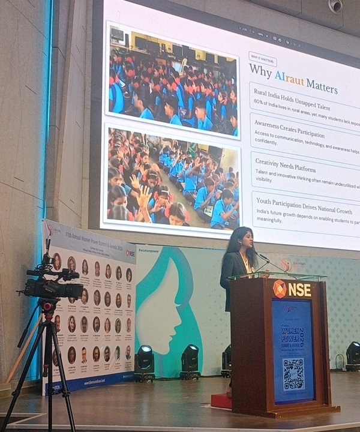

For Institutions
Build future-ready student capabilities through a structured, measurable programme designed to fit within your existing academic environment.
THE FUTURE READINESS GAP
The gap is between what students learn and what the real world expects them to do.
Explore AIraut →WHY AIraut EXISTS
It should help them use what they know with confidence, capability and responsibility in the real world.
WHAT IS AIraut?
AIraut is a scalable Future Readiness Development System for educational institutions.
It bridges academic education and real-world readiness by bringing experiential learning, faculty support, assessment and progress tracking into one structured programme.
WHO IS AIraut FOR?
Whether you're an institution, an educator, or a student, AIraut helps you take the next step towards future readiness.
Build future-ready student capabilities through a structured, measurable programme designed to fit within your existing academic environment.
Facilitate meaningful experiential learning with structured support, without adding unnecessary complexity to your workload.
Develop AI fluency and Human capabilities through practical learning, reflection, projects and real-world application.
WHAT DO WE HELP LEARNERS DEVELOP?
It is about developing the confidence, capabilities, mindset and sense of responsibility to apply that knowledge in the real world.
Express. Participate. Take initiative.
Think. Communicate. Solve. Apply.
Question. Explore. Experiment. Learn.
Collaborate. Lead. Create value.
Act responsibly. Decide thoughtfully. Contribute meaningfully.
HOW AIraut BRIDGES THE FUTURE READINESS GAP
Integrates AIraut into the existing academic environment, creating a structured pathway for future readiness.
Facilitates meaningful experiences with the support needed to guide learning beyond the classroom.
Experience active learning that develops AI fluency alongside essential human capabilities.
Institutions gain visibility into participation, development and student outcomes.
VISION
MISSION
Make future readiness a meaningful part of education by helping institutions develop students beyond the classroom through experiential learning, AI fluency and human capabilities.

AIraut's STORY
After completing her Engineering and pursuing Data Science & Analytics, Aishwarya came across students who were academically capable, yet struggled to express themselves, communicate confidently and step beyond what they were comfortable with.
What began as an observation grew into action through student programmes, field experiences and conversations with educators. Over time, the focus evolved into building a structured approach to future readiness.
That journey led to AIraut — with a simple belief: students deserve to be prepared not only for graduation, but for what comes after it.
LET'S START A CONVERSATION
Whether you're building future-ready learners, facilitating meaningful learning, or looking to partner for impact, let's start a conversation.
AIraut PLATFORM